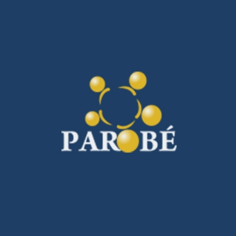

Já estudei de tudo um pouco, comecei pela eletrônica, onde tive meu primeiro contato com programação, mas a vida não me levou por esse caminho logo de cara. Trabalhei com eletrônica por varios anos, até cheguei a estudar Automação Industrial, mas com o tempo senti vontade de mudar para algo mais criativo, então tentei Design Gráfico. Apesar de gostar do curso de Design ainda me sentia deslocado, por isso decidi voltar as origens e estudar programação mais uma vez, trazendo toda essa bagagem comigo.
Pacote Adobe:
Photoshop
Illustrator
Premiere
Sintaxes:
Java Script
CSS
HTML
Comunicação
Pensamento lógico
Senso Crítico
Organização
Escola Técnica Estadual Parobé
Técnico em Eletrônica
Universidade Estadual do Rio Grande do Sul
Técnologo em Automação Industrial
Labenu

Desenvolvedor Web Full Stack